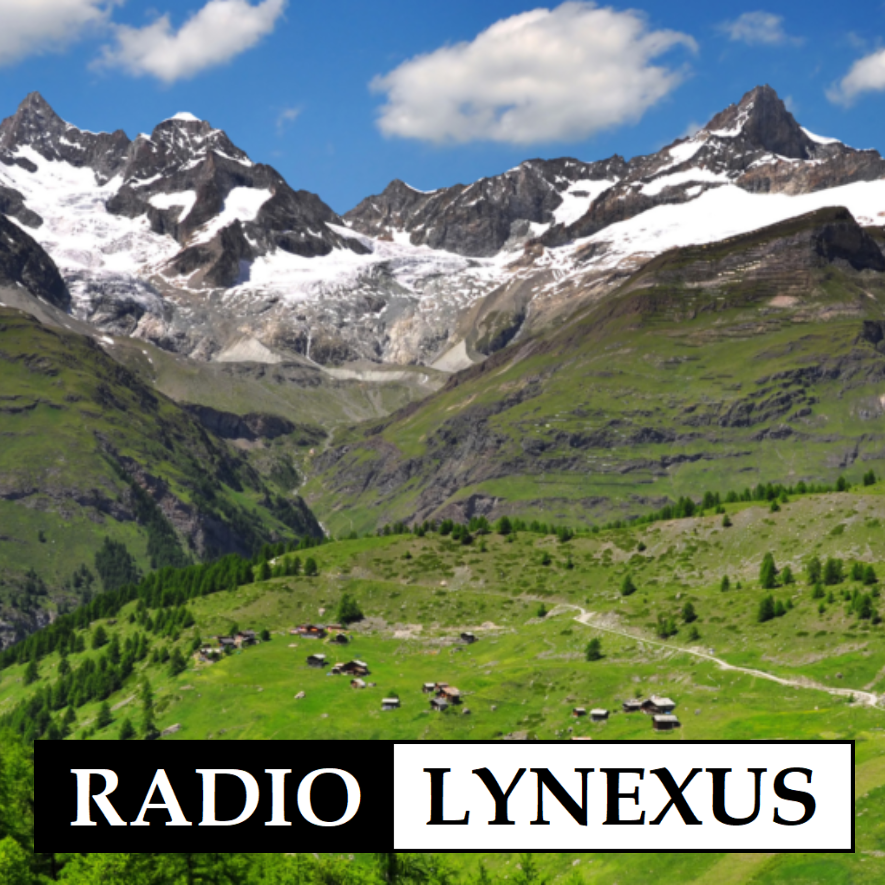

Radio Lynexus
La primera radio 24/7 de Empyria, con una seleccion musical diferente a las otras radios reales y los mejores programas acompañándote en este caotico mundo.

Radio Liberty
Radio Liberty, una emisora de Lynexus Multimedios dedicado a emitir musica antigua de los 20s, 30s, 40s, 50s y 60s.

FM 80s/90s
Una emisora dedicado a emitir la mejor musica de la decada de los 80s y 90s operado en la Frecuencia 3 del dial.

FRECUENCIA 5
J-Pop, J-Rock, City Pop y musica japonesa en general.

Radio Lynexus: Archivos
Frecuencia 6 - Archivos de Radio Lynexus

Totalmusic
Música de todos los géneros, las 24 horas.

Totalmusic 60s-70s
Clasicos de los 60 y 70. Una emisora de 40Media Group.

Totalmusic 80s
Éxitos y joyas de la década dorada. Una emisora de 40Media Group.

Totalmusic 90s
Los himnos de los 90 en Totalmusic, una emisora de 40Media Group.